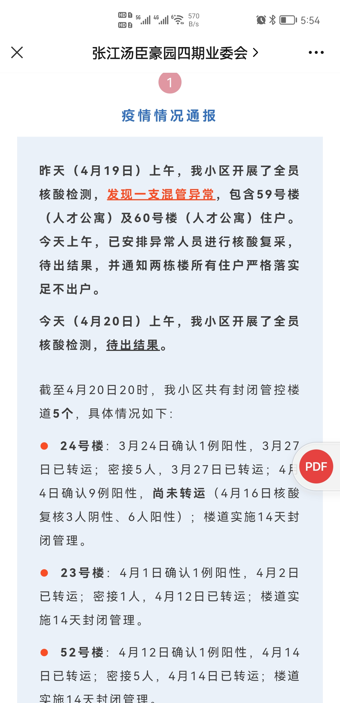
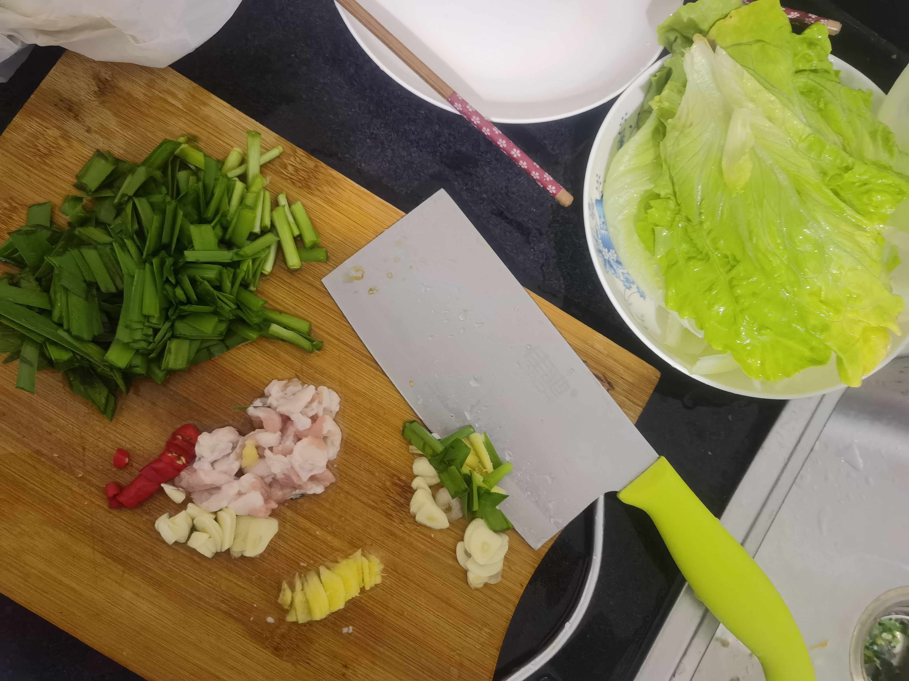

解封后的ToDoList
# Covid-19 全球现状
COVID-19 Dashboard from Johns Hopkins University

Evolution of COVID-19 by Nextstrain
# 魔都现状
确诊与无症状数据统计 更新至 2022/05/31
每日新增（确诊 + 无症状）数据
魔都封控时间轴
2022-03-11 之前
网格化 + 精准防控之 “抗疫典范”
2022-03-11
蜜汁自信～～九宫格模式
封城是不可能的，这辈子都不可能。🐶
上海发布~~日常辟谣之我的辟谣

2022-03-17
园区封闭，开启居家办公
2022-03-22
居家一周日常

2022-03-27
防控新实践之～～鸳鸯锅模式
查看分区封控和核酸通知

2022-03-28
查看鸳鸯锅模式

2022-03-31
第一次发放物资
发放物资通知
接张江镇党委政府通知：为保障封控区域内人员的基本生活需求，预计于 3 月 30 日下午起开始逐小区进行保供蔬菜及食品礼包发放，本小区预计 3 月 31 日左右发放（具体以送达时间为准）被封控在本镇范围内的居村民，按每户一份发放。（因配送有先后，居委会接到货品后会通知居民们）谢谢支持.
疫情逐步包围，开启居家模式
开启新生活模式
2022-04-02
网络流传的 3 月 29 日上海市民与疾控中心的一段录音
查看录音内容整理
具体内容如下：2 为市民，3 疑似为上海市疾控中心某领导。
1：喂，你好。
2：喂，你好，这边是疾控中心吗？
1：嗯，对。
2：你好，我这边反映一个问题。
我父亲是在智威酒店做隔离，是作为密接作为隔离，智威酒店，然后他 25 号，27 号做了两次核酸，昨天 28 号的时候，健康云就是支付宝里面的健康云显示他它是阴性的。昨天没有做过核酸检测，昨天整个酒店都不做核酸检测，就是前天的检测是最新的，是阴性的，是昨天早上 10 点的时候出来的。
然后刚刚他收到一个电话是说被通知疾控中心说你是阳性，准备转移酒店或者准备转移到方舱医院。
嗯，我想问一下，就是我们作为老百姓就是健康云的数据是真实有效的吗？还是说以疾控中心为准？如果以及健康云和疾控中心的数据，这健康云的数据是谁来发布的？是谁来去核实的？我们作为老百姓，如果连健康云的信息都没有办法去核实去确认的话。那么我们作为老百姓，如何去相信到疾控中心的反应呢？如何有一个官方的渠道是让我去证实我是阳性的。
1：嗯，您这边是刚刚那个女的一起的，是吧？
2：是的，是的，我是她儿子。
1：我找领导来帮你接吧。
2：你好，领导。是这样的，前面我刚刚联系了智威那边的领导施先生，他那边也跟我说，他只是被告知。
那我作为他们的儿子，我现在想问一下，就是我父亲前天是最后一次做检测，然后昨天的健康云的报告是阴性的，然后昨天大家都没有做检测。
现在，刚刚，被疾控中心通知说他是阳性的。那他阳性的报告是从哪里去知道的？阳性是前天做的检测，你们是显示的嘛。
然后还有一个问题，就是如果既然你们是不是说他是阳性的，那我们作为老百姓作为唯一可以去证实的一个官方渠道。健康云上面，我们既然上面显示的阴性，那这个数据报告是假的吗？
3：投诉 12345
2：投诉 12345 投诉谁
3：投诉 12345，投诉健康云信息虚假。
2：信息虚假？我唯一的渠道，你跟你们跟我说是虚假？
3：你就投诉他，疾控现在已经通知我是阳性的，但是健康云上显示的信息是阴性的，就投诉他呀。
2：健康云是官方的吗？
3：健康云是官方的。
2：就和你们没有关系的，是吧？
3：对的。
2：那随身办是有问题的，是官方随身办都是有有问题的，是吗？健康也是随身办的。
3：上海市现在就是这个已经弄不来人心，就是大家…
2：领导是这样的，我觉得如果能够安排好正常的医医疗资源的情况下，阳性的病患，虽然他们身心上面是已经有一些难过了，对吧？那如果是在医疗资源能够跟得上的情况下，我觉得这个事情他们是安排妥妥当的话是没有问题的。
我母亲是在上周周五的时候，检测出来是有异样。然后无症状的情况下，在医院现在目前待了第七天。前两天就是临时的医院，临时医院八个人一间，只有吃的东西还可以，也没有洗澡的地方，环境是极其糟糕恶劣的。也就算了，这个是第一点。
在家里待了三天之后，转移到临时的医院。临时医院住了两天之后，是在浦东新区肺科医院，住了两天之后被转移到周浦医院，被转移到周浦医院是当天晚上 10 点。
周浦医院当天晚上 10 点之后，门口的保安拒绝接收，连周浦的院长打电话给他们，他都拒绝接收，然后我妈在外面吹了两个小时的风。
不仅是我妈，是所有的无症状的感染者都在外面。最后是另外一批无症状的感染者，一批年轻的男孩子，把门破开之后才被把他们安排出去住酒店，还好里面的护士是比较妥当的，帮他们安排了病房。
如果不是他们不是那群年轻的人，他们在外面吹了两三个小时的风。本来是无症状的，被吹到有症状，都说不清楚。这是第一点。
第 2 点，以目前的资源情况来说，现在是自身灾害明显大于为灾难本身。
3：投诉 12345。
2：没问题。但是疾控中心如果只疾控中心，只是通知阳性的问题，那后面的医疗资源是谁来通知？
昨天刚刚发生一例，被转移到方舱医院。方舱医院说没有登记，然后大家都在大巴上面睡了一觉，正常人在大巴车上睡一觉都很难过了，不要说是病患者，作为老百姓请你们体谅一下。
我们作为老百姓也没有其他的地方可以申诉了，那请领导你给我一个方案，我只有投诉的方案吗？那我的父亲后面后续的治疗谁能够确保呢？
3：那你就不去。120 来接你的时候就不去。
2：不去，怎么说呢？
3：那不去不去嘛，就不会受这些危害了呀。你不是说了半天就是现在就是说现在医疗资源紧张，你也不去了。
2：那不去有医疗资源能有吗？
3：这个就不是我能够解决了呀。你刚才也说了呀，你其实去了方舱他也没给你治疗呀，你自己不是已经知道了吗？
2：那我是不是可以把我母亲也接出来直接放在家里面隔离？
3：那你去跟医院说，你不是通过我呀。
2：那你们是负责转移的，是吧？
3：我既不是负责转移的，也不是通知负责隔离点的，我们是负责流行病学调查的。
2：就是调查他是阳性不阳性？
3：对的。来阳性了，你去过什么地方？有什么可疑的来源？
2：就是这个报告是你们来出具的，是吧？
3：不是的。
2：是谁来出具的？
3：谁来出具？我们这边接到各个第三方的检测了，他们都可以出具的呀。
2：就是谁来说阳性这件事情我能联系到他吗？那通知我，我也要证明啊，我现在老百姓健康云都没有，我怎么通知啊？
上面显示，公立医院跟我说的是 3 月 28 号 8 点出具的报告上面显示是阴性的。那我找公立医院，还是找您，还是找谁？你给我一个找的人啊！你现在通知我，通知我有用吗？健康云是假的，那你通知有可能是假的，对吧？
3：那你不相信就可以了呀。
2：不相信，不相信万一我出点事情找谁呀？
3：你出什么事情嘛。
2：万一有阳性，万一有症状怎么办？
3：什么叫万一有症状呢？你本来就是阳性啊，我现在通知你不相信呀。
2：那你给我介绍资源，你帮我保证不了？
3：不保证的。
2：不保证的。医疗资源不保证的？
3：不保证，我疾控怎么可能保证你医疗资源。疾控是预防的，我什么地方来的医疗资源？
2：我可以这么理解吧？就是目前，疾控中心也好，医疗资源也好，12345 也好，健康也好，你们这几个都是分裂的，你们都没有形成统一的战线。这就是上海政府目前统战下来是这个问题，对吧？
3：对的。
2：很好。就是领导很简单，你这边已经给我了正确答案。你这边只是负责阳性这个事情告知我，我是否能够能不能跟进医疗资源，你也不知道？
3：对的。我现在告诉你一个事实，就是病房很紧张，隔离点没有房间，120 没有车。
我们一天到晚要接几百个这样的电话。我已经浪费了这么多口舌跟你说。你既然知道了，你来质问我干嘛？
2：我没有质问你啊。阳性报告有吗？阳性报告能看一眼吗？
3：阳性报告能看一眼，那就到应该是到医院里吧，他们应该是会有阳性报告给你。
2：我去了医院之后我又出不来了。
3：所以我跟你说，120 来转的时候，就让他把阳性报告出示给你啊。他不给你的话，你就问他，那你凭什么把我拉走嘛？
2：他没带我们就不走，对吧？他也没拿我没辙。是吧？
3：呃，你可以这么做。
2：我可以这么做，他不会把我强行拉走？
3：这个我就不知道，你现在问这种已经超出了我的范围。
2：我也知道，冷到。作为老百姓，身边的人出来这个事情大家都比较关心的，特别是我父母。
3：我们已经非常气愤的，就是说现在让我们通知人家阳性，健康云上面是个阴性。我们出来了，人家打 12345 投诉，健康云搞什么搞嘛。
2：现在连上海发布微博上面都关闭评论了，我们老百姓没有地方可以申诉啦。
3：所以你只能打电话来把我们骂一顿，对吧？（笑）
2：不是骂一顿，领导我也没骂你，对吧。我只是要证明的一个渠道。你们的这边证明渠道，跟我们老百姓唯一能够通过的证明的健康云是都是驳斥的。我现在真的没有办法了。我们现在都被关在了小区里面。
然后前两天一帮子人，不知道为什么居委会去放他们放去买两个小时的菜，脑子有问题的。这个不是正常的管理的，包括你说的流行病学管理都是有问题的。
3：（插话）完全把上海之前的树立的所有的形象全部给打…
2：就丢人丢到一片，丢丢人已经丢到… 你就去各个政府各个地方，你就去请求人家帮忙去支援就行了。不管是民生的菜也好，现在真的是次生灾害太厉害了…
3：对的，我早就提出来过了。我作为一个专业人员，我早就提出来过了。
2：专业人员发的声音，现在领导不懂的人太多了。
3：我作为一个专业人员，我没发现这个问题吗？我告诉他，轻症无症的，你不要把人家转走了，就在家里隔离，我都提了 n 次了，有人听过啦？没有人听的啊！你现在还来指责我。
2：整个上海这个样子，你说以后怎么怎么去管？以前的两年，可能老百姓管的比较好一点，老百姓自我管理能力比较强一点，就飘了。
3：对呀，我跟你说 120 都没有。
2：那怎么办？
3：你问我我怎么办，凉拌。所以你要心平气和一点。就是说如果你家里面人，症状不是很重…
2：我家里没症状，现在就是担心万一，我父亲是有其他的病状的。现在不是说嘛，他们本身心理上面已经很着急，很难过了，万一其他的病发了之后怎么办？
3：就是当成一个感冒就可以了。我不跟你说了嘛，120 来，你实在有基础疾病，你又确保不了你的健康，到那边去的整个的一个健康安全…
2：领导，现在连出钱都不行。现在是真的资源没有，你知道吧？就我担心的这件事情。
3：对呀，就是没有资源呀。
2：那我们能够要求，酒店里再安排一次核酸吗？
3：酒店里面，你本来住在酒店吗？
2：隔离酒店呀，作为密接在隔离酒店。
3：隔离酒店他本身不是每天采样的吗？你就告诉他，你现在采样是阴性呀。
2：采样是阴性。
3：采样阴性，你不是从健康云上看到的吗？
2：对呀。
3：我不跟你说健康云是不能看的吗？阳性都是我们通知的，不是健康云上看出来的呀。
2：都是你们通知的，因为这个东西就假的嘛，老百姓看的东西就是假的嘛。
3：对，对，只有阳性是我们通知的。整个上海市不一样，知道吧？
2：你最近太累了…
3：我第一次看到这个信息的时候，我觉得不可思议。你告诉人家是阴性，然后你告诉我，让我去打电话告诉人家是阳性，这是什么鬼嘛？我看到这条信息的时候，我跟你的反应是一样的。就是彻底的 “扯” 一个字，你要么就不出报告待检查，人家也…
2：呃，领导，我现在是有录音的。
3：嗯，可以啊，没问题啊，你录好了。
2：对你也不好。
3：嗯，好，那就这样。你录音的话你征得我同意了吗？
2：我这个东西，你是要告我还是要怎么样呢？我现在我也没有说，我现在是提醒你我有录音，我只是想保护你而已，但是我这个东西如果万一有什么事情我…
3：没关系的，我已经提出来过了。
2：我觉得你说的也都是正常的，现在是反映的是老百姓的东西。我觉得如果是这种情况下，还有问责或者其他情况下，我觉得这个政府不是这个国家都搞不好了。我们其实都是爱国的人。很简单的一个问题，对吧？
3：我觉得太扯了，把人家的阳性结果写成阴性，然后让我们疾控去通知一下阳性。
2：领导，我问一个稍微专业性的问题。就是无症状要多久，大概是可以到最后检测是阴性的。
3：大概检测是阴性，这个其实很多看你本身的抵抗力，然后你申请的一个数字，很多的人三五天就阴性了呀，一个礼拜就阴性了呀。
2：三五天就阴性？就是那个我查一下是那个 CT 蛋白值，CT 蛋白好像是 35 以下是属于阳性，我母亲之前检测出来是 22，但是她是无症状，22 算高还是低呀？
3：22 应该是说病毒载量是相对高的。
2：比较高的。那其实如果是越接近 35 越好，对吧？就越容易会反应，是吧？
3：对。
2：就什么样情况下就肯定是有症状的，是 20 以下或者是 15 以下，有这种说法吧？
3：不是的。有的人他的 ct 值很低，但是他也是无症状。这个 ct 值，只是代表你机体里面有可能排的病毒的…
2：他们都打了三针，照道理应该问题不是特别严重吧？
3：对，对。老年人的话所以强调要打第三针，老年人特别是要打。打了之后，一般就轻症，要么就无症状。问题不大的。
2：我就是担心，他又是三高。万一有那个药没有及时，现在很多老百姓什么做血透啊，做什么东西的，都没有时间去做了。
3：现在根本就没有地方给你做。就是这个问题，我知道的呀，这个次生灾害太厉害了。
2：这个谁能够反映给领导去听了，给这些市政府听的？
3：你这样，你把我的录音放出去，可以的。
2：对呀，我也想去反映。政府你应该了解一下我们现在老百姓的诉求了。不是说有很多的中小企业都倒闭了，这就算了。就是民生，人的生命安全是最重要的，现在这人心惶惶的。
3：这个我也不懂呀，现在我们都感到彻底的绝望，知道吧？专业人员我们做的累死啦，我们今天要调查你们很多的…
2：（插话）而且我看很多大白工作七十多个小时，然后有猝死的，真的蛮可惜的。
3：很扯的一件事情，就干嘛呢。对吧？
2：好，谢谢领导，麻烦你了，浪费你时间了。但是我还是想去跟我父亲去沟通一下，主要是安慰他下他们。
3：不是，你要这么跟老人说，他们主要的恐惧是担心。因为之前媒体的一些宣传，要死人的，这个是他们最害怕。
2：这个我们作为孩子已经普及过了，其实是一个正常的感冒。
3：你要一定要宣传这个口径给他，知道吧？就是得了一次感冒，然后你又打了三针，你有足够的体内的一个免疫力，即使现在排病毒，但是你表现出来的症状很轻，那就是疫苗的功劳呀。你要这么跟他说呀。然后他不用担心呀，有什么好担心的嘛。
在隔离点其实是最好的，知道吧？是的，在隔离点是最好的。你真的到方舱医院去那个环境，你妈去过了你就知道了，那个真的是让人绝望，知道吧？
所以你让他不用担心啊，担什么心嘛。该吃吃该喝喝，然后好好休息，关键是要好好休息，好好休息了，免疫力上去了，过了几天病毒该排的排出去了呀，就阴性了呀。
然后基础性的疾病，你让他要按时吃药。
2：嗯，好的，该该他现在还骨折着，正好上次走路骨折着。这么多事情碰到，聚在一起了，然后谁都受不了。
3：大家都是没办法。
2：老百姓最苦，说白了还是老百姓最苦。
3：对的。要被逼疯了知道吧？我们专业机构也要被逼疯了，知道吧？专业人员说的话根本就没人听。现在全部把这个病变成了政治性的一个疾病。花了这么多的人力物力财力… 就在做一个防流感的，你看到现在哪个国家防流感这么防吗？
2：就接种率现在没到 80% 嘛，也也是一个问题嘛，主要是还是担心这个。
3：那这一轮的话，不是应该抓紧时间提高接种率嘛。我提案写过好几次了，知道不？所以你不要认为，我们医护人员或者专业人员都是饭桶，我们都知道重点是什么？但是没人听。
2：领导那个如果是转院的话，转的转到哪个医院你们也不知道的。
3：不知道的。我非常明确告诉你，第一批都没出来。所以哪来的房间嘛。
2：嗯，明白了，我知道了。好的，谢谢。
3：好，那就这样啊。
2：好，再见。
3：嗯，拜拜。
第一次抗原检测，还有点小兴奋
抗原检测结果
对自己真狠
2022-04-03
防控总方针之～～动态清零
查看动态清零方针
2022-04-05 清明节
4 月 5 号清明节解封？(嗯，never happened)
继续铁锅炖，锅盖都已经焊起来了
鸳鸯锅变成了一锅炖 🐕 反正也没有封城就是
一周解封？(嗯，never happened)
两周后会解封吗？(Oh No No No…)

何时才能解封
解封 is a dream 🐋 it never happened!
2022-04-07
居家封控，魔都开启了魔幻的管理模式
点开魔幻模式
离 COVID19 最近的一次
2022-04-11
当魔幻照进现实
节目清单
通知内容
2022-04-13
2022-04-15
动员一切力量和资源～～社会面清零
News everywhere
2022-04-19
楼栋混管异常～～最后虚惊一场
小区疫情通报

2022-04-21
疫情爆发持续高位，恐慌和紧张情绪酝酿
负面消息蔓延
0422 朋友圈刷屏一段视频 (阴间滤镜)
视频截图
保供发放物资～~ 质量问题
收到质量存疑的酱鸭 ~~ 现在还在hah
上海发布之答疑解惑
答疑解惑1
答疑解惑2
2022-04-25
调节情绪 ~~ 淡定淡然
记录下一些日常
遥遥无期


2022-05-01 劳动节
五一解封了吗
日子总算好起来
2022-05-06
病例逐步下降～～曙光初现
平静与平和的一周
还有面粉大米耗油啥的
2022-05-12 汶川大地震公祭日
Remember，Peace and Love
物资发放频繁～～解封有望
不务正业之黑洞照片

2022-05-13
5 月中旬清零 Flag 立起来
清零清零清零
2022-05-16
小区内可以自由活动了
今晚的月亮很大很圆，但愿人长久，千里共婵娟
Mate40pro 50x 变焦可以的
2022-05-25
码了一天的C++代码
终于实现了一个研究了好久的Monitor功能
看看动图效果
2022-05-31
小区解封出入自由了
告居民书
开心地出门了
2022-06-01
上海全面解封
# 小海豹解封后的 ToDoList
查看解封时间
遥遥无期
2022年6月1日全面解封
查看想做的那些事

和胖头鱼吃大餐 - 胡桃里
见朋友，聊聊天
拉胖头鱼压马路，逛商场，看星星
做饭给胖头鱼吃
去找胖头鱼看电影
和胖头鱼世纪大道散步，后滩吹风
庆祝胖头鱼迟到的生日
给胖头鱼买一个小海豹玩偶
邀请胖头鱼去吃西餐
和胖头鱼一起坐摩天轮
和胖头鱼一起吃小炒肉
见亲人
天文馆预约走起
工作工作